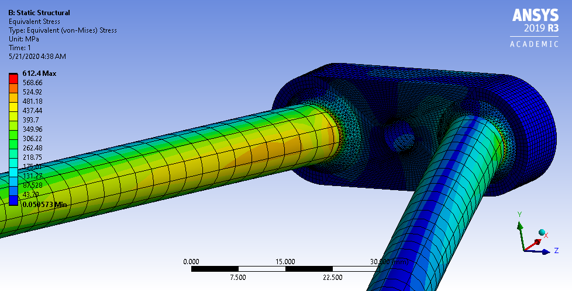
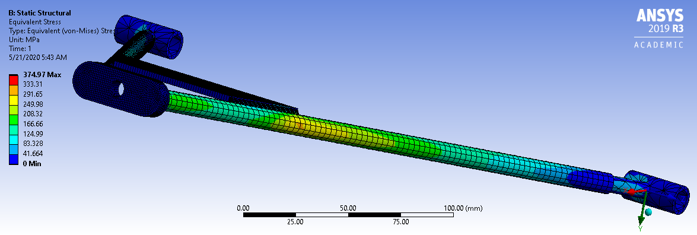

A Fuse csapata
A BME Fuse csapata a Shell Eco Marathon versenyre tervez és gyárt elektromos koncepcióautót. A Formula Student csapatokkal szemben itt nem a sebesség, hanem a hatótáv a cél. Ezért is szolgált örömömre amikor felvételt nyertem ebbe a csapatba is, hiszen így egy egészen más diszciplinában is kipróbálhatom magam.
Jelenleg a mechanika csoportrészben tevékenykedem, és azon belül is a futómű alsó lengőkarának megtervezésével foglalkozom. Ennek rész a koncepcióterv megalkotásától kezdve a véges elemes analízisen át a gyártás kész modellek elkészítéséig minden, így ez egy meglehetősen komplex folyamat. A következőkben a tehereloszlás segítését szolgáló validálásról mutatok ANSYS programban készült VEM eredményeket.
 